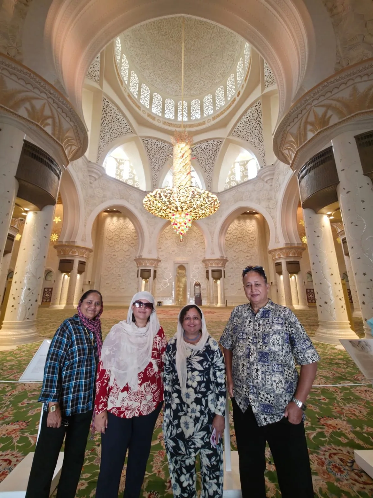

प्रवास • आठवणी • मनोगत
करुणा परदेशी यांच्या प्रवासवाटा
दुबईच्या आधुनिक चकाकीपासून अबुधाबीच्या शांत भव्यतेपर्यंत—प्रवासात अनुभवलेले क्षण, भेटलेली ठिकाणे आणि मनात साठवलेल्या आठवणी.
“प्रवास संपतो, पण त्यातून मिळालेल्या आठवणी आयुष्यभर सोबत राहतात.”

प्रवासाचे सहा दिवस
दिवसागणिक प्रवासवर्णन
सध्या दिवस ३ ते ६ प्रकाशित करण्यासाठी तयार आहेत. दिवस १ आणि २ साठी जागा आधीच ठेवली आहे.

दिवस 3
दुबई प्रवास – तिसरा दिवस
Museum of the Future, Burj Al Arab, Dubai Frame, Jumeirah आणि Dubai Marina—दुबईच्या अनेक रूपांची सुंदर ओळख.
संपूर्ण लेख वाचा →
दिवस 4
दिवस चौथा – बुर्ज खलिफाच्या अविस्मरणीय भेटीचा दिवस
क्रायस्लर लिमोझिनमधून Dubai Downtown आणि १२५व्या मजल्यावरून दिसलेली प्रकाशमय दुबई.
संपूर्ण लेख वाचा →
दिवस 5
दुबई प्रवासवर्णन – दिवस पाचवा
Deiraची पारंपरिक Abra ride, Gold Soukची झळाळी, Meena Bazaarची खरेदी आणि मेट्रोने परतीचा प्रवास.
संपूर्ण लेख वाचा →दिवस 6
दिवस सहावा – अबुधाबीची अविस्मरणीय सफर आणि परतीचा प्रवास
अबुधाबीच्या शांत भव्यतेतून परतीच्या भावूक प्रवासापर्यंत—सहाव्या दिवसाचे अनुभव आणि मनोगत.
संपूर्ण लेख वाचा →लेखिकेबद्दल
करुणा परदेशी
या ब्लॉगमध्ये करुणा परदेशी यांनी स्वतः लिहिलेल्या दुबई–अबुधाबी प्रवासवर्णनातील अनुभव आणि मूळ छायाचित्रे जपून मांडली आहेत.
प्रवासातील वास्तू, शहरांचे नियोजन, खरेदी, सहप्रवासी आणि वैयक्तिक मनोगत—या सगळ्यांना त्यांच्या मूळ लिखाणाच्या भावनेतून स्थान दिले आहे.